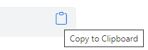

Code
1 + 1For this course we will be using R. R is a free software environment for statistical computing and graphics. To run the code blocks for this course on your own computer you will need to have installed R. This is available for Linux, MacOS and Windows.
RStudio is an integrated development environment (IDE) that can make programming and other tasks easier in R. An open source edition is available to download and install.

You need to install R before you install R Studio.
Once R and R Studio are installed, open R Studio on your computer and type the following in the Console to the left or bottom left of the screen, alongside the prompt, >.
1 + 1then hit Enter/Return. You should, of course, obtain the answer 2, as below.
[1] 2You will also find that if you move your mouse to over the code block above, an option appears to copy the code to the clipboard.

The base functions of R are greatly extended by the very many packages/libraries that have been developed for it. At the time of writing, there are 19052 of these on CRAN, which is the main repository for them. Many of these have been grouped into ‘tasks’ and topic areas, which can be viewed here.
Most of the packages that will be needed for this course will be installed as they are needed. However, some will be used so regularly that we should install them now. Cut and paste the following code chunk into the Console and hit Enter/Return.
install.packages("sf", dependencies = TRUE)
install.packages("tidyverse", dependencies = TRUE)
Run the code above even if you have the packages installed already so that you also have available all the packages that these depend upon and link to.
If you type getwd() into the R Console you will obtain your current working directory – the default location to look for files and to save content to. Mine is,
getwd()[1] "/Users/ggrjh/Dropbox/github/MandM"You may wish to change this to something else each time you start R. You can do this using the drop-down menus. There is also the function setwd(dir) – type ?setwd in the R Console to learn more.

You could also create a new project in R by using File –> New Project… from the dropdown menus and create it either in a new directory (probably most sensible) or an existing one. There is nothing especially magical about a project in R. As stated here, “a project is simply a working directory designated with a .RProj file. When you open a project (using File/Open Project in RStudio or by double–clicking on the .Rproj file outside of R), the working directory will automatically be set to the directory that the .RProj file is located in.” However, it is that which makes it useful: when you open a project you know that you are going to be working in a specific folder on your computer which them becomes the default ‘container’ to save files to or to download them from.”
It would be a good idea to create a new project now which can then be the folder and working directory for this course and its contents.
You may notice that I prefer a blue to a white screen when working in R. To change it to this, from the drop-down menus use Tools –> Global Options… -> Appearance and select Solarized Dark as the Editor theme. You may, of course, have your own preference.